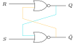

, resets it, holds; forces
, resets it, holds; forces  and, if both are released together, a race decides the final value, so it is forbidden; the NAND version has active-low inputs; gating with an enable
and, if both are released together, a race decides the final value, so it is forbidden; the NAND version has active-low inputs; gating with an enable Construction
NOR latch: , .
| S | R | Q⁺ |
|---|---|---|
| 0 | 0 | Q (hold) |
| 1 | 0 | 1 (set) |
| 0 | 1 | 0 (reset) |
| 1 | 1 | Q = Q̄ = 0 (no!) |
How it holds: with each NOR is an inverter of the other's output — two inverters in a ring, which has exactly two stable states. Set:  forces , then , and the loop keeps it after
forces , then , and the loop keeps it after  returns to 0. Characteristic equation with constraint
returns to 0. Characteristic equation with constraint  .
is critical: the outputs are no longer complementary, and if and fall at the same time both NORs see , both outputs rise, both fall… the final state depends on which gate is faster (a race, possibly metastability or oscillation).
NAND latch (): inputs active low, holds, is forbidden.
Gated SR: and pass through ANDs with an enable
.
is critical: the outputs are no longer complementary, and if and fall at the same time both NORs see , both outputs rise, both fall… the final state depends on which gate is faster (a race, possibly metastability or oscillation).
NAND latch (): inputs active low, holds, is forbidden.
Gated SR: and pass through ANDs with an enable  ; with the latch holds whatever the inputs do.
D latch: gated SR with , (the forbidden combination can no longer occur).
; with the latch holds whatever the inputs do.
D latch: gated SR with , (the forbidden combination can no longer occur).  : transparent,
: transparent,  follows
follows  . : keeps the last value had before fell.
. : keeps the last value had before fell.
Picture

sets , resets it, and the feedback holds the state.Cross-coupled NORs: each output feeds the other gate.
Example
D latch, high from 0 to 4, low after; goes 0→1 at 1, 1→0 at 3, 0→1 at 5. follows: 1 at 1, 0 at 3, and stays 0 at 5 because . A latch reacts to the level of , not to its edges.
Intuition
A latch is a door: open () the output sees the input, closed it shows the last thing that walked through.
Pitfall
Being transparent for the whole active phase, a latch cannot be the only memory in a loop: the new state runs around the loop and changes again before closes (see edge-triggered flip-flops).